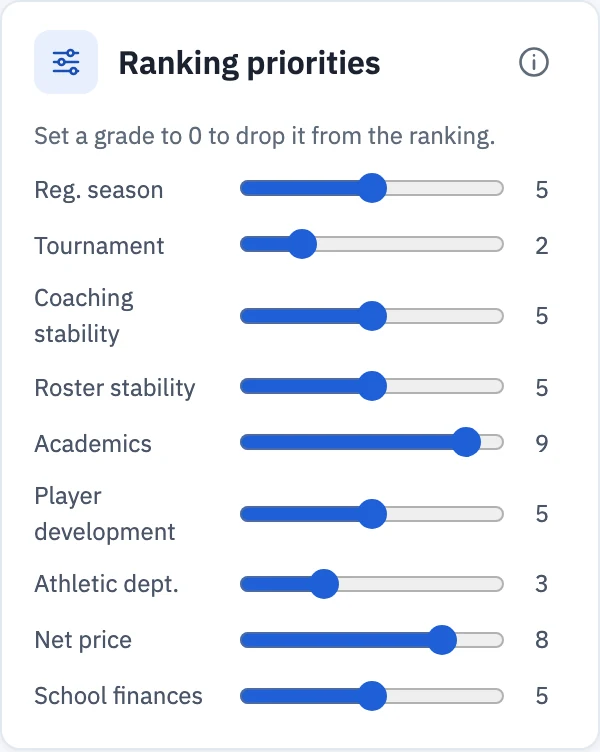
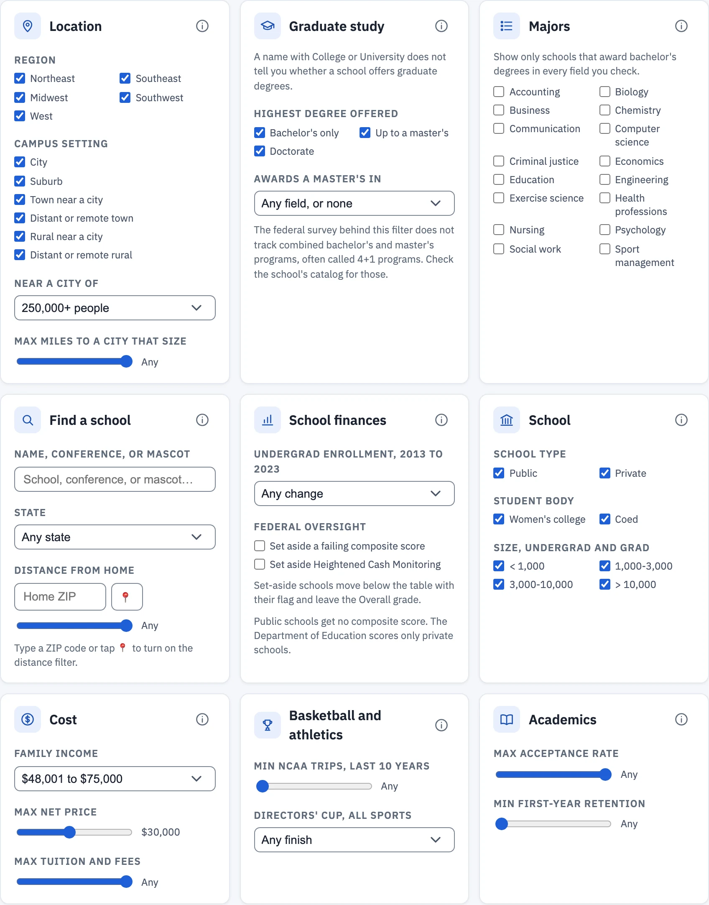
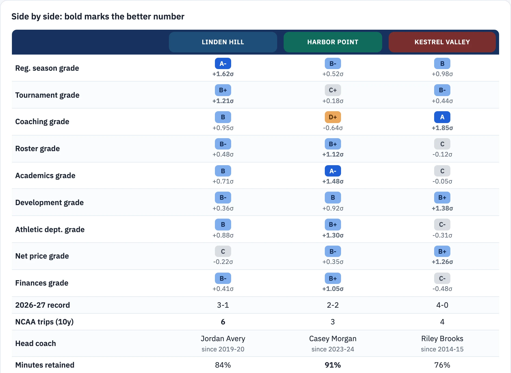

School Report Cards grades 411 Division III programs on the basketball program and on the school around it. You choose how much each grade counts and filter by cost, academics, location, and majors. Each time you change a weight or a filter, the list sorts again.
You pay $129 once for 365 days of access. The purchase does not renew.
School Report Cards helps high school players and their families build a short list of colleges to contact and visit.
Each school gets nine grades from A+ to F. Each slider runs from 0 to 10. Set it by how much that grade matters to you. Each time you move a slider, the list sorts again. Set a grade to 0 to drop it from the ranking.


Mark up to three schools with the star to see them side by side. The better value in each row has a green background. The comparison covers every grade, the record, the coach, roster retention, cost, academics, and school finances.

The PDF fits on one page. It lists your filters in plain words, your priorities, and the top 20 schools with every grade.
School Report Cards grades the 411 programs whose games count in the 2026-27 NCAA Power Index (NPI). Search by school name, a short name, or a former name.
Games against these programs do not count in the 2026-27 NPI, so School Report Cards does not grade them. The list comes from the provisional members table on the D3 Stat Lab reference page.
| Program | Membership status, 2026-27 |
|---|
Each grade compares a program with the Division III average over the last 10 seasons. Newer seasons count more. The 2026-27 season counts in full, 2025-26 counts 78%, 2024-25 counts 61%, and 2023-24 counts 47%. The weight keeps falling each season, to 11% for 2017-18.
A grade compares a program with other Division III programs. Your own priorities decide whether a high or low grade matters to you. For example, a low Athletic department grade matters little to a player who cares most about basketball and academics.
Basketball grades come from game results and the roster pages each program publishes. School figures come from the U.S. Department of Education: the Integrated Postsecondary Education Data System (IPEDS) and Federal Student Aid. Athletic department grades use the Learfield Directors' Cup standings. Open each section for the full notes.
Grades measure distance from the D3 average in standard deviations (σ). A+ starts at +2.25σ. C covers the average.
Grades cover the last 10 seasons. Newer seasons count more. The 2026-27 season counts in full, 2025-26 counts 78%, 2024-25 counts 61%, and 2023-24 counts 47%. The weight keeps falling each season, to 11% for 2017-18.
Each letter covers a fixed σ range, so the number of schools at each letter changes from grade to grade. A historic outlier grades far above a strong program, and programs with similar resumes grade alike. Hover any grade for its exact σ and percentile.
Reg. season: win percentage plus a bonus for making the NCAA field. Tournament: NCAA wins and how deep each run went. Coaching stability: current coach tenure minus a penalty per head-coaching change in the last decade.
Coaching grade scope: the grade measures the stability of the head-coaching position over the last 10 years. Stability usually signals overall program health. A coach's effect on the program shows more in the Reg. season, Tournament, Roster, and Development grades. No grade here covers personality or coaching style.
Roster stability: minutes-weighted retention (two thirds) and freshman share of minutes (one third). Retention is the share of non-senior minutes that came back the next season, found by comparing each team's consecutive roster pages. Seniors and graduate students who leave do not count against a program. Freshman share of minutes pools the minutes of the last three rosters.
Roster grade caveat, class years: the class year for each player comes from the team's own roster page. We do not know whether a team lists academic class or athletic eligibility, and teams may differ.
Some players graduate with eligibility left and skip a final season. If the roster lists such a player as a junior, she looks like an underclassman who left, and her departure lowers the program's retention. The same happens when a player stops playing to focus on academics.
We cannot separate those cases from a player who left the team for other reasons. Every non-senior who does not return counts the same. Treat the Roster grade and the "Left early" lists as an estimate built on that assumption.
Academics: graduation rate and selectivity (from the acceptance rate), both from the Integrated Postsecondary Education Data System (IPEDS), a U.S. Department of Education survey.
Player development: returning players' year-over-year growth in production rate (pts+reb+ast per 30 min) and role (minutes). Each is measured against the typical D3 progression for a player at the same starting level and class, which removes regression to the mean.
Holding an elite rate counts as development. A routine bounce from a low base earns no credit. The grade weights players by minutes, across every offseason from 2023-24 to 2025-26. A season counts once it is finished.
Athletic dept.: average Learfield Directors' Cup points per season across 10 seasons, 2014-15 to 2025-26. The National Association of Collegiate Directors of Athletics (NACDA) publishes the standings and published none for 2019-20 or 2020-21. The Cup scores a school's finishes in NCAA championships across all sports, men's and women's, up to 18 sports a year.
A season with no points counts as zero, including seasons before a school joined Division III. The grade says nothing about the basketball program itself.
Net price: the average net price for full-time first-year students who got grant aid. Lower prices grade higher. The grade uses the price for all families, even when you pick a family income. A school with no reported price grades at the D3 average.
School finances: the change in undergraduate enrollment from fall 2013 to fall 2023. The second measure is the endowment per full-time-equivalent student at the end of fiscal year 2023. Both come from IPEDS. Each is measured on a log scale, so a school that doubled and a school that halved sit the same distance from no change. The two count equally.
Some campuses merged and now report as one school, such as the three Vermont State campuses. Their 2013 count covers one campus and their 2023 count covers the merged school, so we leave their enrollment change blank. Some campuses report their endowment through a parent university and show none.
Federal oversight: the profile also shows two Department of Education measures that the grade does not use. The financial responsibility composite score runs from -1.0 to 3.0. A score of 1.5 or higher passes, 1.0 to 1.4 passes with extra oversight, and below 1.0 fails. Only private schools get one, so it would grade only part of the field.
Every school with a failing score or a cash-monitoring listing shows a label beside its name. The Federal oversight checkboxes move those schools below the table instead of hiding them, and set-aside schools leave the Overall grade.
Heightened Cash Monitoring is a list of schools under extra federal oversight of their student aid money, with the reason for each.
The Overall grade re-ranks the schools that match your filters using your priority weights over the component σ-scores, then re-grades within that filtered set. Set a priority to 0 to drop that grade from the ranking.
Campus setting and nearest city: the setting is the locale code from the National Center for Education Statistics (NCES). It measures distance from the campus to an urban area. Nearest-city distances are straight-line miles to the closest U.S. city of each size, so they ignore cities in Canada.
Graduate study: the highest degree offered comes from the IPEDS directory. A school awards a master's in a field when it awarded at least one master's degree in it in July 2022 to June 2024. IPEDS has no field for combined bachelor's and master's (4+1) programs, so check the school's catalog for those.
Women's colleges: the label follows the Women's College Coalition member list, with two exceptions. William Smith counts as a women's college: it is the women's college paired with Hobart, with one shared campus and one federal record. Mississippi University for Women (MUW) is a member but counts as coed. It began admitting men in 1982.
Distance from home: straight-line miles from your ZIP code or your location to each campus. A ZIP code maps to the average location of the IPEDS campuses with the same first three digits. A distance can be off by several miles.
Majors: a school offers a field when it awarded at least one bachelor's degree in it in either of the last two years in IPEDS. A school that reports degrees only as liberal arts or interdisciplinary studies shows no fields. Check the school's catalog before you rule it out.
Each school's profile links to its page on College Navigator, the U.S. Department of Education's public view of the same federal survey data. College Navigator shows the newest year in IPEDS, which can be one year newer than the data here.
| Field | Source | Data year |
|---|---|---|
| Enrollment | IPEDS Fall Enrollment | Fall 2023 |
| Tuition and fees | IPEDS Institutional Characteristics | 2023-24 |
| Acceptance rate | IPEDS Admissions | Fall 2023 |
| Graduation rate | IPEDS Graduation Rates | 2023 |
| Net price, all families and by income | IPEDS Student Financial Aid | 2022-23 |
| First-year retention, student-to-faculty ratio | IPEDS Fall Enrollment | Fall 2023 |
| Highest degree offered | IPEDS Institutional Characteristics | 2024 |
| Master's fields awarded | IPEDS Completions | July 2022 to June 2024 |
| Bachelor's majors offered | IPEDS Completions | July 2022 to June 2024 |
| Campus setting, campus location | NCES locale codes in the IPEDS directory | 2024 |
| Nearest city | U.S. Census Bureau city population estimates and place locations | July 1, 2024 |
| Distance from home | IPEDS campus locations. A ZIP code maps to the average location of IPEDS campuses with the same first three digits. | 2024 |
| Undergrad enrollment change | IPEDS Fall Enrollment | Fall 2013 and fall 2023 |
| Endowment per student | IPEDS Finance, divided by fall enrollment | Fiscal year 2023 |
| Financial responsibility composite score | Federal Student Aid, U.S. Department of Education | Newest fiscal year listed, 2021 to 2023 |
| Heightened Cash Monitoring | Federal Student Aid, U.S. Department of Education | June 1, 2026 |
| Directors' Cup | NACDA final Division III standings | 2014-15 to 2025-26 |
| Season records | D3hoops.com team pages, plus game results for the current season | Every season on file |
| NCAA tournament history | NCAA Division III tournament results | 1982 to present |
| D3hoops poll rank | D3hoops.com Top 25 poll | 2026-27 |
| Head coaches | Each team's athletics website | Every season on file |
| Rosters, class years, minutes, player stats | Each team's roster and statistics pages | Every season on file |
| Playing style | Computed by us from game box scores, blended with a preseason projection over a team's first eight games | 2026-27 |
| Women's college or coed | Women's College Coalition member list, with two exceptions in the method notes. Men's share from IPEDS Fall Enrollment. | Member list: November 9, 2026. Enrollment: fall 2023. |
$129
Use the email you want to sign in with. The site has no password. Each time you sign in, it emails a one-time link to that address.
Yes. Anyone in your family can sign in with the checkout email on their own device. The sign-in link goes to that inbox each time.
No. Type your email on the sign-in page and open the link we send. You stay signed in on that device until you sign out.
Your access ends and we do not charge you again. If you buy again before it ends, the new year starts when the current one ends.
A grade cannot tell you whether a school fits you. Use the grades to find programs worth a closer look, then talk to the coaches and visit.